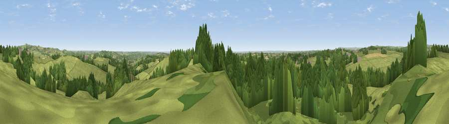

Viewpoint near Turnditch
#15526 in England · top 12% of its area beats it · near TurnditchThe view, rendered

A 360° render of this exact spot computed from the terrain model, tree cover and land cover — summer colours, afternoon light, calibrated against photographs of famous viewpoints. Real trees, hedges and buildings will differ in detail.
The panorama
Grey silhouette: terrain skyline in each direction (720 bearings, Earth curvature and refraction included). Dashed green: skyline with trees (+15 m) and buildings (+8 m) as obstacles. Blue strip: how far the ground is visible on each bearing.
Where the view opens
Wedge length = distance to the farthest visible ground on that bearing (vegetation-aware). Rings at 10, 25 and 50 km.
What fills the view
52% grassland · 43% woodland · 3% cropland · 1% built-up
Angular shares of the visible panorama (visual magnitude), not map area. Landscape diversity 0.38 (0–1 Shannon).
Key numbers
More beautiful places nearby
The staircase of upgrades: each row has a higher view potential than everything closer. Driving times are estimates from straight-line distance, calibrated against real road routing — check an actual route before setting out.
| Place | Direction | Drive | Score |
|---|---|---|---|
| Viewpoint near Windley | SE · 2 km | ~6 min | 58.6 |
| Firestone Hill | E · 6 km | ~12 min | 65.8 |
| Viewpoint near Hazelwood | E · 6 km | ~12 min | 66.3 |
| Alport Height | NNE · 6 km | ~13 min | 73.9 |
| Tissington Hill | WNW · 15 km | ~26 min | 75.5 |
| Viewpoint near Stanton under Bardon | SSE · 37 km | ~56 min | 76.0 |
| Viewpoint near Woodhouse Eaves | SE · 38 km | ~57 min | 77.7 |
| Viewpoint near Mow Cop | WNW · 44 km | ~64 min | 78.9 |
53.00720, -1.58230 · source: screening · position refined by local search. Computed location — check access rights before visiting.